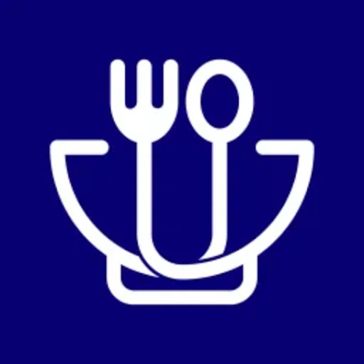
우주라이크
대학생을 위한 지역 식당 제휴 앱, 개발 인원 3명
경북대학교 인근 음식점과 제휴해 학생들에게 쿠폰과 적립형 스탬프를 제공하는 서비스입니다. 서비스 기획과 UX, UI 디자인을 맡고 프론트엔드 개발에 참여했습니다.
App Store, Google Play 출시
자세히 보기아이디어를 빠르게 플레이 가능한 형태로 만들고, 직접 검증하며 발전시키는 게임 클라이언트 개발자입니다.
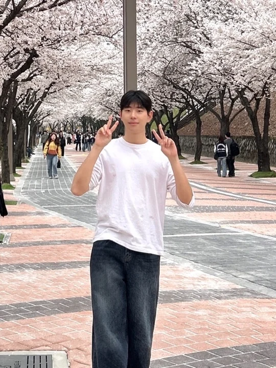
아이디어를 빠르게 플레이 가능한 형태로 만들고, 직접 검증하며 발전시키는 게임 클라이언트 개발자입니다.
게임을 만드는 과정 자체를 좋아해 개발을 시작했고, Unity를 기반으로 직접 게임을 기획하고 구현하고 있습니다. 좋은 아이디어가 떠오르면 오래 고민하기보다 빠르게 프로토타입을 만들고, 직접 플레이하며 핵심 재미를 검증하고 개선하는 방식을 선호합니다.
Claude Code와 ChatGPT를 개발 과정에 활용하고, PixelLab과 ElevenLabs는 MCP로 연결해 아트와 사운드를 만듭니다. 이 방식으로 기획, 개발, UI 디자인, 게임 에셋 제작까지 직접 수행해본 경험을 가지고 있습니다.
현재 메인 프로젝트로 모바일 뱀서라이크 「지구특공대」를 1인 개발 중이며, 2026년 9월 출시를 목표로 하고 있습니다.
앱을 만들어보고 싶다는 생각 하나로 친구 2명과 대학가 식당 제휴 앱 「우주라이크」를 개발하여 재학생 다운로드 1,000회 이상을 기록했습니다.
아이디어가 생기면 빠르게 주요 기능이 구현된 프로토타입을 만들고 핵심 가치를 검증하는 것을 중요하게 생각합니다. 완벽하게 준비한 뒤 시작하기보다 빠르게 만들고, 테스트하고, 피드백을 받으며 수정하는 편입니다.
Claude Code, ChatGPT, PixelLab, ElevenLabs 등 다양한 AI 도구를 필요에 따라 적절히 활용합니다. AI가 만든 결과물을 기획 의도에 맞게 판단하고 수정하며 생산성을 높이는 도구로 활용합니다.
1인 개발 게임 「지구특공대」를 만들며 플레이 테스트 툴 어스 스튜디오를 AI agent로 직접 개발해 사용하고 있습니다.
비전공자로 개발을 시작해 Unity, C#, GitHub, Figma 등을 프로젝트를 진행하며 익혔습니다. 새로운 기술이 필요하면 열정을 가지고 직접 찾아 배우는 편입니다.
업무에 필요한 새로운 도구나 기술 스택이 있다면 시간을 투자해서 배우는데 주저하지 않고 성장하는 즐거움을 느낍니다.
「우주라이크」를 운영하며 고객인 식당 점주들과 직접 소통하고 서비스에 대한 의견과 피드백을 적극적으로 반영했습니다.
항상 유저의 시각에서 고민하고 실제 사용자의 경험을 기준으로 서비스를 개선하는 것을 중요하게 생각합니다.
대학생을 위한 지역 식당 제휴 앱입니다. 경북대학교 인근 음식점과 제휴해 학생들에게 쿠폰과 적립형 스탬프를 제공하는 서비스입니다.
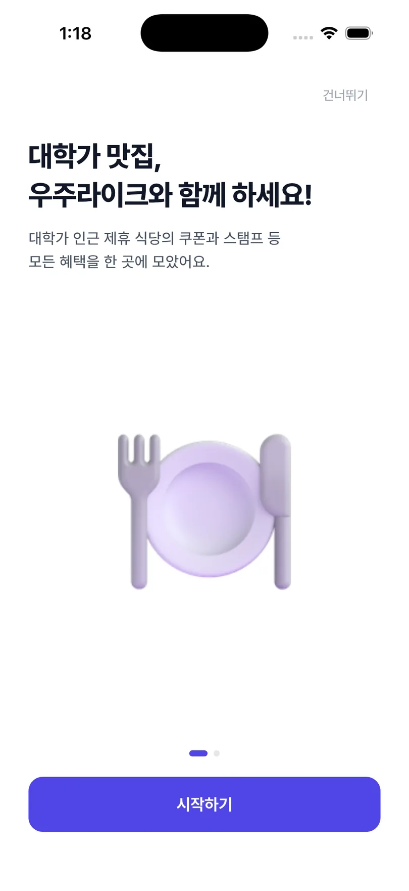
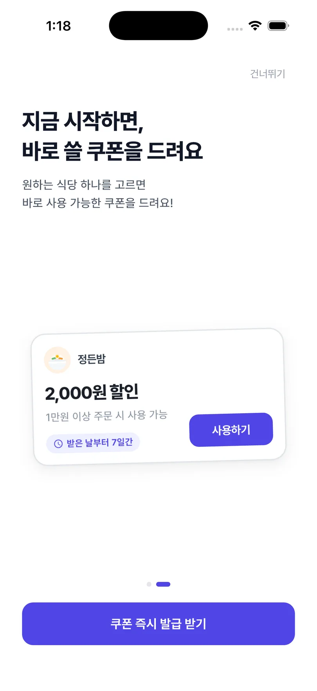
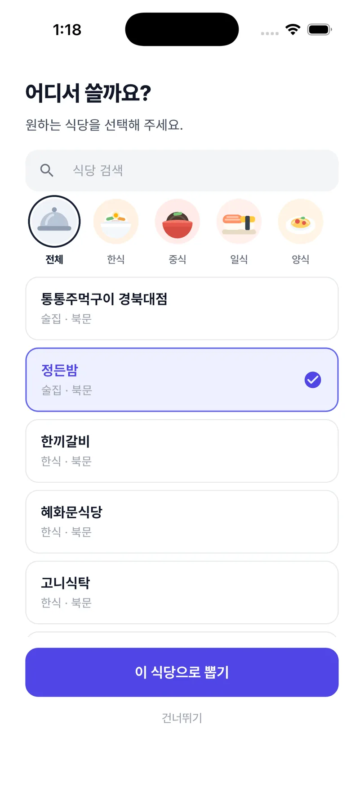
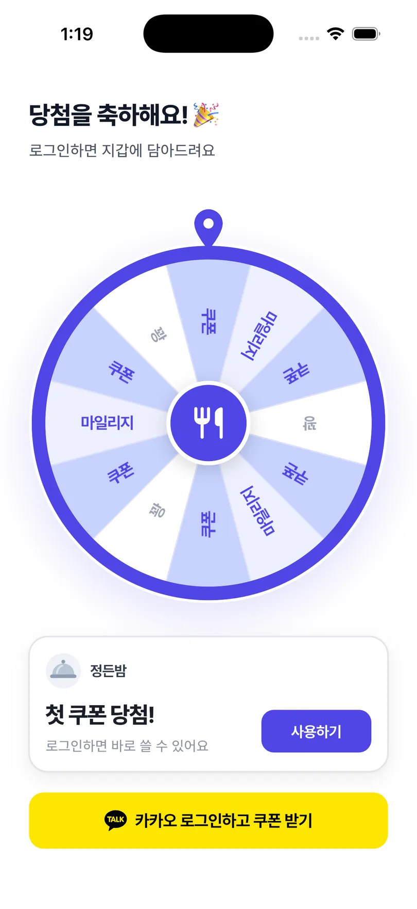
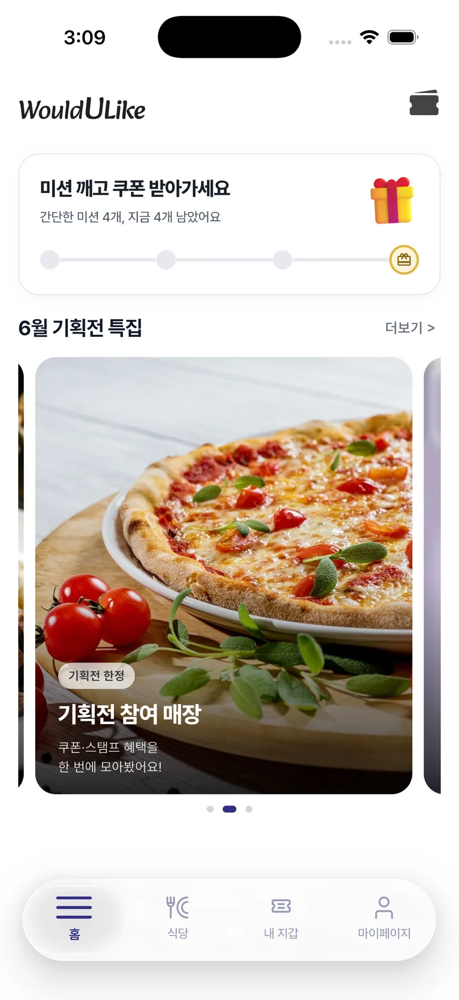
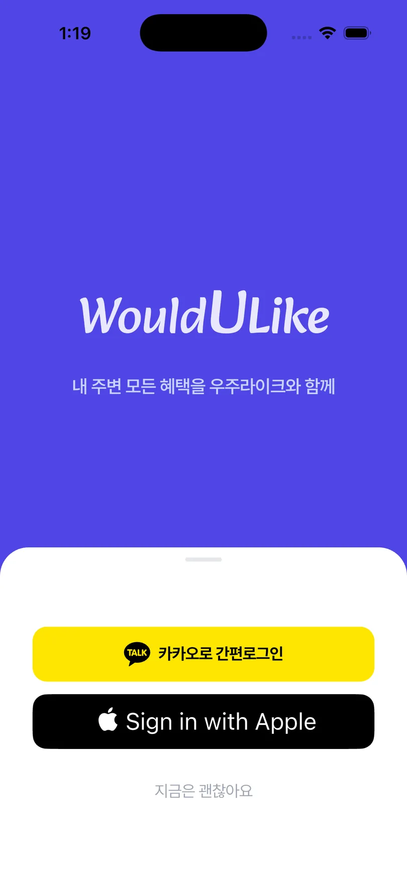
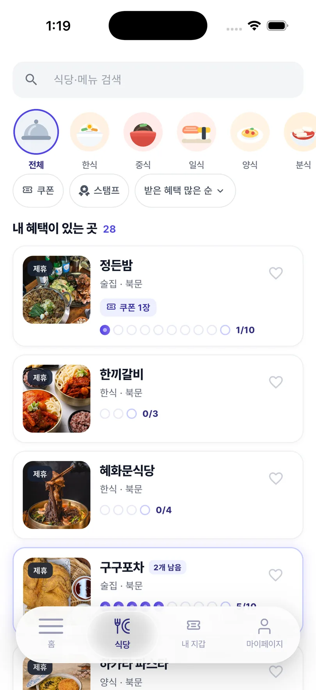
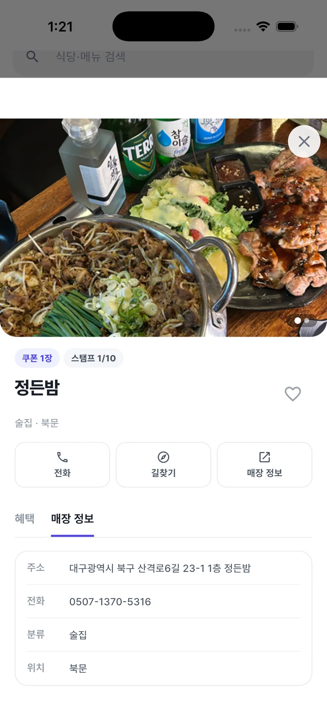
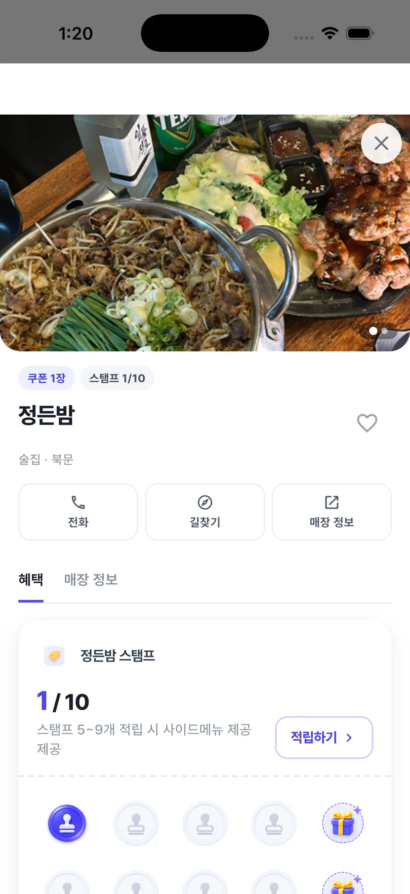
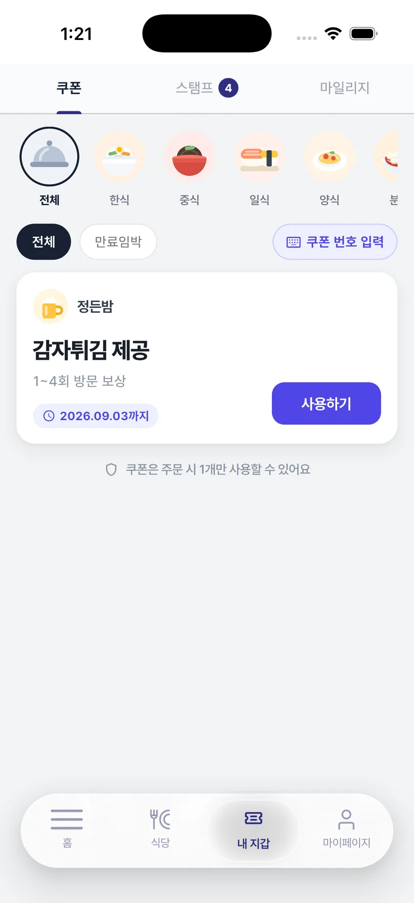
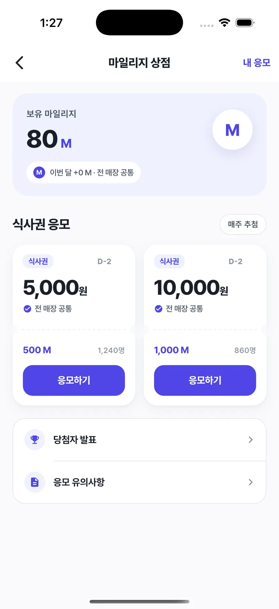
1인 개발 중인 모바일 뱀서라이크 게임입니다. 몰려오는 적으로부터 생존하고, 매 웨이브마다 스킬과 보급 물자를 구매하여 플레이어가 원하는 조합으로 빌드를 설계합니다. 게임 기획부터 개발, UX와 UI, 에셋 제작까지 전 과정을 직접 진행하고 있습니다.
아래에서 바로 플레이할 수 있습니다. 오른쪽은 20초 플레이 영상과 실제 게임 화면입니다.
첫 로딩에 시간이 걸립니다. itch.io에서 크게 보기
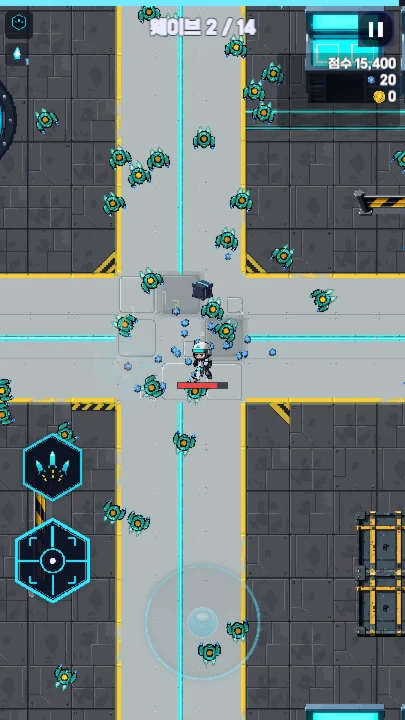
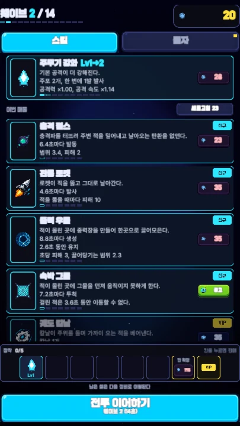
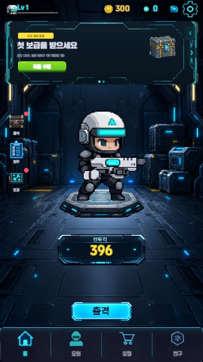
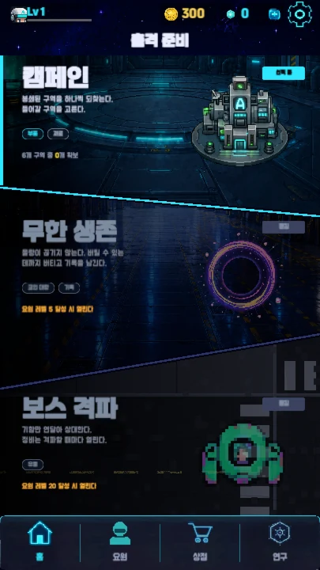
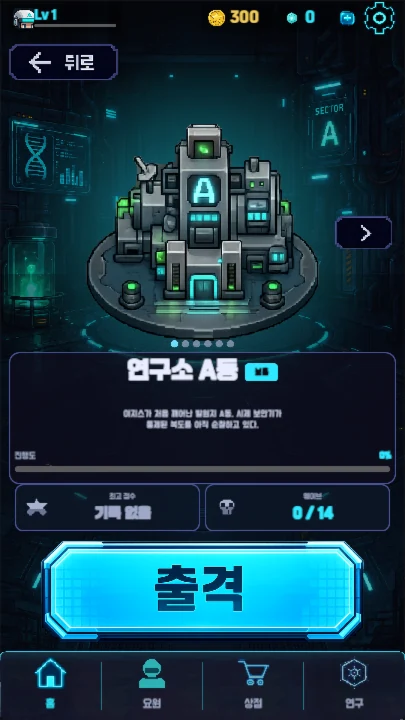
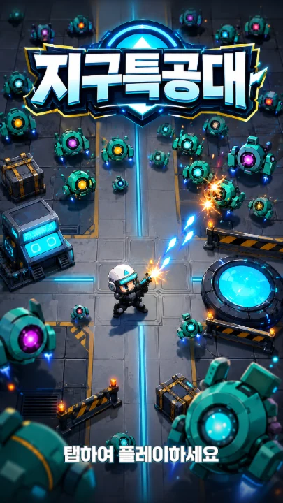
어스 스튜디오는 지구특공대의 핵심 가치인 재미를 설계하기 위해 만든 플레이 테스트 툴입니다. 유저가 지루할 틈을 느끼지 않도록 전투와 성장의 모든 순간을 시뮬레이션해보며, 스테이지 구성부터 전투 밸런스, 경제 시스템, 스킬까지 하나의 환경에서 반복적으로 조정하고 완성도를 높여가도록 설계하였습니다.
여러 웨이브로 구성된 스테이지에서 웨이브별 적의 체력, 공격력, 이동 속도, 등장 수 등을 조정합니다. 설정한 조건으로 바로 시뮬레이션해 난이도 흐름을 확인할 수 있습니다.
무기와 장비, 성장 요소의 수치를 조정하고 전투력과 실제 피해량이 어떻게 달라지는지 확인합니다. 수치를 바꿔가며 특정 구간의 성능이 지나치게 높거나 낮지 않은지 비교합니다.
웨이브별 재화 획득량과 아이템 가격, 강화 비용을 조정합니다. 플레이 진행에 따른 수입과 지출, 누적 재화를 그래프로 확인하며 경제 흐름을 맞춥니다.
액티브 스킬과 장비 효과의 수치를 조정하면서 실제 전투 화면에서 발동 연출과 피해량을 함께 확인합니다. 게임에 적용하기 전에 스킬의 사용감과 성능을 빠르게 테스트할 수 있습니다.